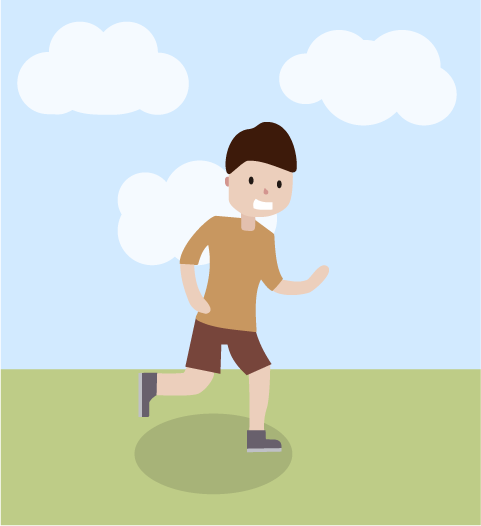
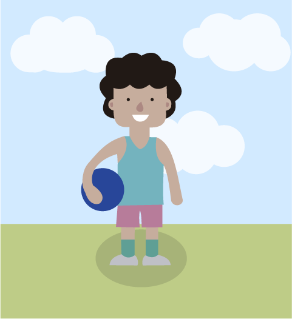
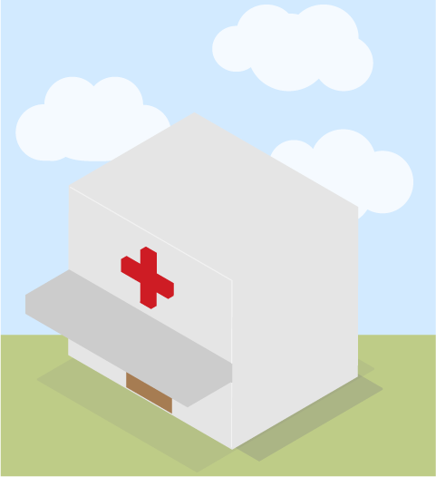
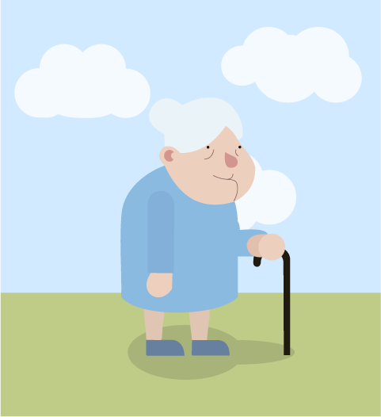
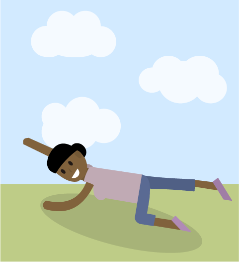

A caminhada é um exercício simples, gratuito, de baixo impacto físico e com ganhos importantes para sua saúde. Se você nunca caminhou ou não está praticando nenhum exercício físico, comece caminhando 10 minutos e vá progredindo gradualmente com o passar das semanas. Procure estar bem alimentado, bem como utilizar roupas leves para a caminhada e usar tênis confortáveis. E não esqueça de respeitar seus limites, afinal o importante é se sentir bem!
Contra a dor lombar o movimento é um grande aliado. Tratamentos passivos realizados pela força do terapeuta e repouso não são recomendados, pois a movimentação pode ser colocada no seu dia a dia através de atitudes simples, como continuar realizando as atividades diárias, laborais e de lazer, bem como praticar exercícios físicos! Mas é bom lembrar que você tem que respeitar seus limites! Vá com calma e gradativamente, no início faça movimentos mais simples, com o tempo e sempre respeitando seus limites vá tornando-os mais difíceis ou complexos. Esses são os passos iniciais para começar a perder o medo. A dor pode acontecer durante a atividade, mas não deve continuar nem aumentar depois de terminá-la. Sentindo-se seguro com o movimento atual progrida gradualmente até conseguir fazê-los livremente.
O fisioterapeuta da Unidade Básica de Saúde(UBS) mais próxima da sua casa pode ajudá-lo no planejamento e na progressão da intensidade dos exercícios físicos, lá você também pode perguntar sobre os grupos de exercícios ou ver quais há perto de você. Na presença de sinais negativos relacionados à saúde mental e bem estar social que estejam influenciando de maneira ruim a sua saúde, como sintomas depressivos, ansiedade e pensamentos negativos sobre a dor lombar, procure ajuda da equipe de saúde mais próxima. Não se esqueça, há sempre alguém pronto para te ajudar!
Para controlar a dor o movimento também é um aliado. Sentir dor ao tentar fazer um determinado movimento é normal devido a dor lombar, mas isso não deve ser levado como uma proibição de realizar tal movimento! Pois deixar de fazê-lo pode colaborar para que a dor persista e se agrave, impondo incapacidades nas atividades cotidianas. Mas não se preocupe, com o esforço você pode e vai mudar tal situação! O essencial é continuar enfrentando o medo e fazer escolhas ativas para isso, envolva-se com várias atividades físicas no seu dia-a-dia! Se exercitar faz bem pois com isso você pode: Desenvolver mais força, Fortalecer os ossos, Diminuir a dor muscular, Realizar melhor as tarefas cotidianas, Melhorar a qualidade de vida e o humor e Fazer bons amigos!
Dentre as formas de se manter ativo, a participação em atividades físicas de lazer influencia diretamente a melhora da dor lombar devido seus diversos efeitos sobre a saúde. Qual atividade física de lazer você gosta de praticar? Caminhar? Correr? Dançar? Nadar? Não há exercício melhor de se fazer do que aquele que você gosta! Escolha o tipo de exercício pensando em suas necessidades, preferências e capacidades. Se o exercício que fez não te ajudou não significa que não serve, afinal, se exercitar faz bem! Converse com o fisioterapeuta da sua Unidade Básica de Saúde para que ele possa orientar você a respeito das possibilidades de exercícios para você!
Este é um infográfico desenvolvido através do esforço conjunto entre alunos e professores tanto do curso de Sistemas e Mídias digitais de UFC quanto do curso de Fisioterapia da UFC. O conteúdo aqui apresentado baseia-se em parte de um livreto criado pela professora Ana Carla Lima Nunes(que pode ser acessado através deste Link ) com o intuito de auxiliar pessoas que sofrem com a dor lombar crônica a se tratarem da melhor forma, nele é possível ler sobre diversos aspectos dos cuidados com esse problema.
Para usar o Infográfico clique e arraste o boneco desanimado até algum lugar com animação para que ele aprenda o que pode fazer para melhorar a dor nas costas.
Para usar o Infográfico clique e arraste o boneco desanimado até algum lugar com animação para que ele aprenda o que pode fazer para melhorar a dor nas costas.